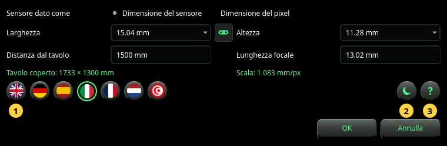

Impostazioni
La fotocamera che dà la scala, la lingua, il tema e il manuale.
Imposta apre la finestra Impostazioni. Contiene quello che la foto da sola non può dire: a che distanza dal tavolo si trova la fotocamera e, quando la foto non lo indica, l'obiettivo e il sensore. Sceglie anche la lingua e il tema, e apre questo manuale.


La fotocamera
- Sensore dato come — come descrivete il sensore: con la sua Dimensione del sensore (larghezza × altezza in mm) o con la sua Dimensione del pixel (larghezza × altezza di un pixel in µm). Usate Dimensione del sensore, a meno che non sappiate che la foto è alla piena risoluzione del sensore.
- Larghezza e Altezza — la dimensione del sensore, o quella di un pixel. Scegliete una voce dall'elenco o digitate un numero. In modalità Dimensione del sensore l'elenco nomina i formati di sensore comuni (1/2.3″, 1″, APS-C, pieno formato e altri); sceglierne uno imposta anche la sua altezza.
- La catena fra le due — attiva, l'altezza segue la larghezza (pixel quadrato o sensore quadrato). Si disattiva da sola quando un sensore nominato ha un'altezza diversa.
- Distanza dal tavolo — dalla fotocamera al piano del tavolo, in mm. Misuratela: ogni millimetro conta (vedete Riferimento).
- Lunghezza focale — la lunghezza focale dell'obiettivo in mm, come è stampata sull'obiettivo o mostrata dalla fotocamera. Usate la lunghezza focale reale, non l'equivalente 35 mm.
Sotto i campi, in verde, la finestra mostra che cosa danno questi valori:
- Tavolo coperto — la parte del tavolo che la foto mostra, in mm.
- Scala — la dimensione di un pixel sul tavolo, in mm/px. Due numeri (per esempio 0.578 × 0.646 mm/px) indicano che i pixel non sono quadrati.
Un risultato che ha bisogno della dimensione della foto mostra — (serve una foto) finché nella finestra non c'è una foto.
I tasti rotondi
- Le bandiere — la lingua. Una bandiera cambia subito la finestra, perché possiate leggerla; l'intera applicazione la segue solo dopo OK. L'arabo si scrive da destra a sinistra.
- Il tema — pannelli scuri o chiari. Come la lingua, è mostrato nella finestra e applicato con OK.
- Il ? — apre questo manuale in una finestra propria, nella lingua della finestra Impostazioni.
OK conserva tutto. Se è mostrata una foto e la fotocamera è cambiata, viene subito analizzata di nuovo. Annulla o Esc non cambiano nulla, nemmeno la lingua che stavate guardando.